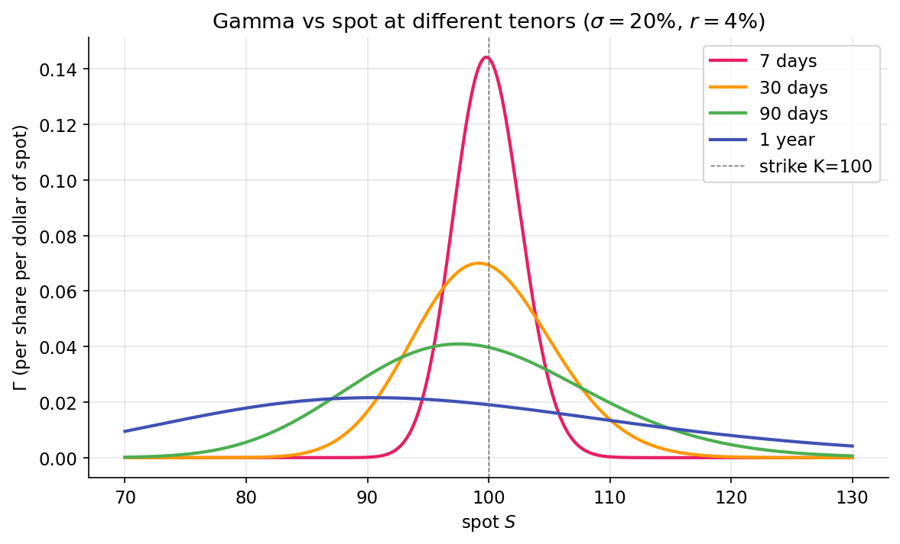

Gamma — the second derivative¶
Delta measures an option's exposure to the underlying. Gamma measures delta's own sensitivity to the underlying. Two consequences follow: a hedge set at time \(t\) is inexact by \(t + dt\), and the rate at which it becomes inexact is itself a tradable quantity. Dealer positioning and market regimes in Part 5 follow from this structure.
Definition¶
Gamma measures how much delta changes per $1 move in the underlying. It is non-negative for long options (calls and puts alike) because the payoff is convex in \(S\), and the second derivative of a convex function is non-negative.
Under Black-Scholes:
where \(\phi\) is the standard normal PDF. Gamma is the same for a call and a put with identical strike and expiry: put-call parity makes their deltas differ by 1, but their derivatives with respect to \(S\) are equal. The GEX pipeline uses a single bs_gamma function regardless of contract type.
Drivers of gamma magnitude¶
Three factors determine gamma:
-
Moneyness. \(\phi(d_1)\) is the standard normal density evaluated at \(d_1\), peaking when \(d_1 = 0\) (approximately when \(S = K\) for short-dated options at modest rates). ATM options have the highest gamma. Deep ITM and deep OTM options have low gamma because delta is already near 1 or 0 and changes little with \(S\).
-
Time to expiry. The \(\sqrt{T}\) in the denominator produces rapidly growing gamma as expiry approaches for ATM options. A 30-day ATM call has moderate gamma; a 1-day ATM call has much larger gamma, with delta oscillating between near-0 and near-1 as the underlying crosses the strike on expiry day. This mechanism underlies pin risk near expiration.
-
Volatility. The \(\sigma\) in the denominator means gamma is higher when implied volatility is lower. The intuition: when \(\sigma\) is high, \(d_1\) remains far from zero across a wide range of \(S\), so \(\phi(d_1)\) is small; when \(\sigma\) is low, small moves in \(S\) cross \(d_1 = 0\) rapidly, concentrating gamma near the strike.

The ~7× ratio between the 7-day and 1-year peaks at ATM is exactly the \(1/\sqrt{T}\) scaling made visual: \(\sqrt{365/7} \approx 7.2\), which matches the plotted peak heights.
P&L of a delta-hedged position¶
Consider a position long one call, hedged short \(\Delta\) shares. Over a small time increment \(dt\) during which the underlying moves by \(dS\), the portfolio P&L is:
The delta terms cancel, as designed: first-order moves in \(S\) in the call are offset by first-order moves in \(-\Delta S\). The remainder is second-order in the underlying (gamma) and first-order in time (theta).
Two observations:
- Gamma P&L is non-negative: \((dS)^2 \ge 0\) and \(\Gamma \ge 0\), so every price move — up or down — contributes positively to the hedged position.
- Theta P&L is non-positive for long options: time decay erodes value regardless of whether the underlying moves.
A hedged option holder earns from realized volatility and pays through time decay. The break-even condition reduces to a clean form:
A long, delta-hedged position breaks even when realized squared return equals implied variance per unit time. The option's implied volatility is, operationally, the volatility at which the hedged position has zero expected P&L. When realized exceeds implied, long gamma profits; when realized falls short of implied, long gamma loses.
This relationship is central to options markets. It reframes the option price as the market's forecast of realized volatility at which a hedged position breaks even. Volatility traders operate primarily in these units.
Gamma scalping¶
A long-volatility position rebalanced regularly earns through mechanical buying at low prices and selling at high prices:
- At \(S_0\), the holder has 1 long call with delta \(\Delta_0\) and has shorted \(\Delta_0\) shares.
- The stock moves to \(S_1 > S_0\). The call's delta has risen to \(\Delta_1 > \Delta_0\) (due to gamma). The portfolio is under-hedged, with implicit long exposure of \(\Delta_1 - \Delta_0\) shares.
- Rehedging requires shorting additional shares at \(S_1\), a higher price than the initial hedge.
- The stock returns to \(S_0\). Delta falls back to \(\Delta_0\). The portfolio is now over-hedged.
- Rehedging requires buying back shares at \(S_0 < S_1\). The round-trip has sold high and bought low.
The round-trip captures realized variance. Higher volatility over the hedging interval produces larger captured variance. In the continuous-hedging limit, the position captures \(\tfrac{1}{2}\Gamma (dS)^2\) per move, summed over the path — proportional to realized variance.
The up-front cost is the call premium, which is eroded over time by the \(\Theta\) term. The position is profitable when realized variance over the trade's life exceeds what the premium priced in. Gamma scalping is the operational form of trading "short implied, long realized" variance.
Short gamma: the counterparty¶
The seller of the call is short gamma. The same price path that produced positive P&L for the long-gamma holder produces equal-and-opposite negative P&L for the short. Short-gamma positions profit when the underlying is calm and lose when it moves.
Dealers who systematically sell options to retail and institutional customers are, on aggregate, short gamma. Each move costs them and induces hedging in the direction of the move (buying on strength, selling on weakness) — which amplifies the move. Long-gamma dealers hedge by selling on strength and buying on weakness, dampening moves. This feedback loop is the mechanism behind market regimes, developed in Part 5.
Scale: GEX in dollars per 1% move¶
Raw gamma has units of \(\text{shares}/\$\). For regime analysis, the more useful quantity is the dollar hedging flow required per 1% move in the underlying:
The \(S^2\) factor converts gamma into dollar-per-percent units: \(\Gamma\) has units \(\partial\text{shares}/\partial\$\); multiplying by \(S\) yields \(\partial\text{\$}/\partial\$\); multiplying by \(S\) again converts a 1% move into a dollar hedging flow. Open interest and the contract multiplier scale to the aggregate position.
packages/gex/src/gex/gex.py reports GEX in these units. The regime logic in the gamma-flip lesson operates on this aggregated quantity.
Summary¶
The reader can now reason about:
- Why gamma is identical for calls and puts of the same strike: the second derivative depends on the payoff's shape, and call and put payoffs share the same second derivative.
- Why short-dated ATM options have very high gamma: the \(\sqrt{T}\) in the denominator grows as expiry approaches.
- The relationship between an option's implied volatility and the break-even point of a delta-hedged position: long gamma profits when realized exceeds implied, and loses when realized falls short.
Implemented at¶
trading/packages/gex/src/gex/greeks.py:31 — bs_gamma(spot, strike, rate, sigma, tenor_years) returns \(\phi(d_1) / (S \sigma \sqrt{T})\), vectorized. A single function handles calls and puts. It is used in packages/gex/src/gex/gex.py:per_strike_gex, which multiplies by OI, multiplier, \(S^2\), and \(0.01\) to produce the \(\text{\$GEX per 1\%}\) quantity used in Part 5.
Next: Theta, vega, rho →